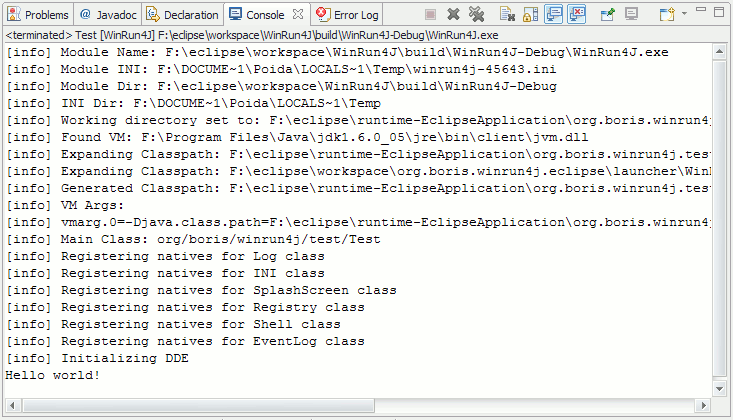
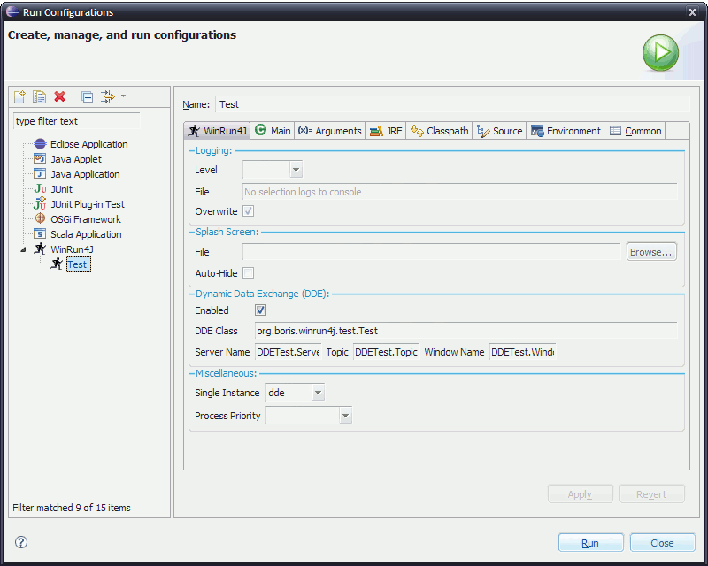
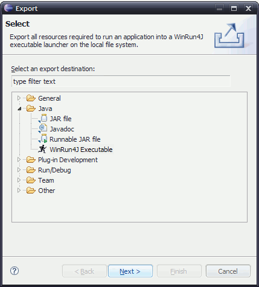
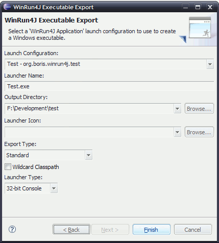

To launch a java application using WinRun4J simply right-click on any runnable java class (ie. with a main method) and
select Run As->WinRun4J Application:

You will then see the following output in the console view:

The amount of output (eg. logging) and other details can be configured on the launch configuration tab:

You can add the WinRun4J JNI java library to your project's classpath by right-clicking on the project and
selecting Build Path->Add Libraries. Select WinRun4J and click Next->Finish. You should see:

And finally, you can export your application as a single Windows Executable with (optionally) all the
neccessary JARs embedded inside the launcher executable. Go to File->Export... and select Java/WinRun4J Executable:

Click Next and then select the WinRun4J launch configuration (from above), the name you want
for the executable, the output directory and (optionally) a launcher icon:

 WinRun4J
WinRun4J